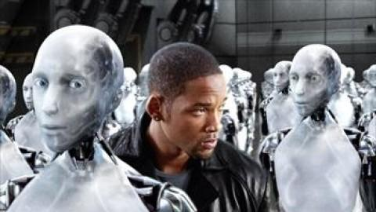
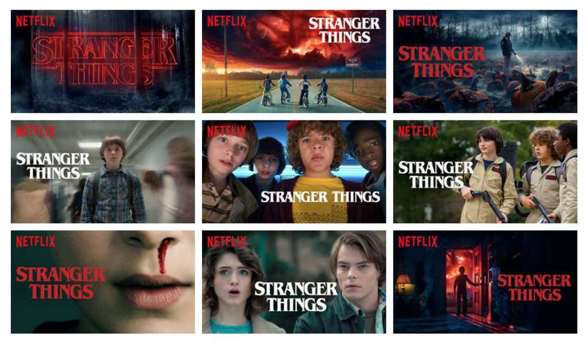
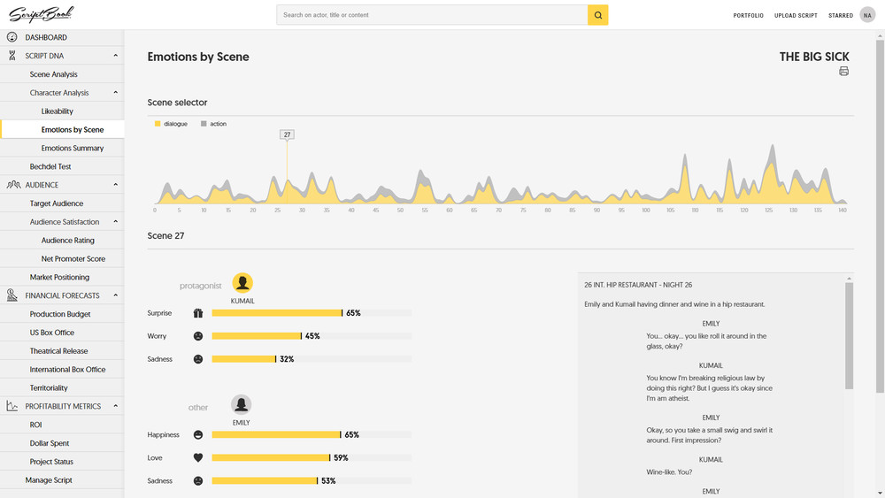

L'intelligence artificielle au service de l'industrie cinématogrpahique.
Introduction
Depuis sa création, le cinéma a beaucoup évolué, aussi bien au travers des techniques qu'il emploie que de ce qu'il représente. A l'origine issu de la projection de lumière sur une pellicule, il est passé au numérique, puis aux effets spéciaux et enfin à la synthèse par ordinateur. A l'origine traitant de scènes très basiques comme l'arrivée d'un train en gare de La Ciotat, le cinéma traite aujourd'hui de fictions très poussées ou encore de sujets de société.
Au fil des années et des développements technologiques, le cinéma a attribué une place de plus en plus importante aux ordinateurs, aux robots, voire même à l'intelligence artificielle. Le cinéma est en réalité le reflet de l'intéressement grandissant de la société pour ces technologies. Si bien que de nombreux films ont vu le jour autour de ces thématiques. A.I. Intelligence artificielle, le film de Stanley Kubrick paru en 2001 ou encore I, Robot, de Alex Proyas paru en 2004 en sont de bons exemples. Depuis quelques années, les robots et les intelligences artificielles détiennent une place de plus en plus importante à l'écran, aussi bien dans des rôles de héros que d'anti-héros.

Aujourd'hui, avec l'essor des technologies et notamment de celles tournées vers l'apprentissage par ordinateur, l'intelligence artificielle a tendance à passer non pas à l'écran mais derrière l'écran. Elle prend une place grandissante dans toute l'industrie cinématographique aussi bien en tant qu'assistant à sa réalisation, que parfois de remplaçant...
Expérience Spectateur
Avec le développement du cinéma, de plus en plus de contenu cinématographique est apparu. Les supports se sont eux aussi diversifiés, entre le cinéma, les séries, les documentaires, les films d'animations, il est aujourd'hui facile pour chacun de trouver du contenu qui correspond à ses goûts. Seulement avec la mutliplication des types et des sources de contenu, il devient de plus en plus difficile de savoir faire le tri.
C'est là que la recommandation apparaît. Les algorithmes de recommandation reposent sur le fait qu'une intelligence artificielle puisse mettre en avant pour nous des choses semblables pour faciliter nos choix et nous faire gagner du temps. Ils apparaissent au début d'internet de manière très basique où l'algorithme recommendait des éléments possédants les mêmes attributs ou caractéristiques. Aujourd'hui ces intelligences artificielles sont beaucoup plus performantes qu'alors, elles sont d'ailleurs la source de près d'un tiers des ventes en ligne dans le monde. Le cinéma n'a pas été épargné par l'émergence de ces algorithmes, notamment grâce au développement des plateformes de streaming en ligne, où la recommandation joue un rôle primordial.
En effet, l'idée derrière ces intelligences artifcielles est de découvrir les goûts du spectateur au travers de ses visionnages, puis de mettre en avant le contenu qui y correspond. Netflix est dans la matière un très bon exemple. L'entreprise de streaming en ligne dispose d'intelligences artificielles très poussées et met au centre de sa proposition de valeur ces algorithmes de recommandation. Le spectateur est alors assisté dans son expérience utilisateur, le contenu qui lui est proposé est susceptible de lui plaire et son expérience du cinéma s'en trouve améliorée.
Pour le cas Netflix, cette recommandation passe bien évidemment par la proposition de contenu adéquat, mais pas seulement. En effet, Netflix a poussé la recommandation jusqu'à modifier sa façon de proposer du contenu à ses utilisateurs en fonction de leurs goûts. Les couvertures des films et les bande annonces sont en effet adaptées pour plaire à l'utilisateur et ainsi maximiser les chances qu'il visionne le contenu mis en avant. "Un utilisateur a regardé 3 films avec l'acteur X, voici un film avec le même acteur, et d'ailleurs, voici la couverture où il est mis en avant !", c'est un peu la politique de recommandation du site de streaming en ligne. Mais cela va au delà de la recommandation de contenu basée sur du contenu. En effet, à partir d'une étude comportementale des utilisateurs, ce qui est mis en avant est adapté. L'analyse comportementale scrute toute l'activité des utilisateurs, comme par exemple :
la navigation sur le site
le temps de lecture des séries, afin de déterminer le niveau d'appréciation
les séries abandonnées, et au bout de combien de temps
celles regardées avant et les suivantes en tentant de trouver une corrélation
l'heure de visionnage du contenu
l'historique de visionnage de la semaine précédente, le mois précédent, l'année précédente à la même époque.
Toutes ces analyses sont combinées pour à la fois proposer le contenu le plus pertinent, mais aussi de la meilleure façon possible.

Plus généralement, cette recommandation est basée sur un regroupement des entités semblables, qu'elles soient des utilisateurs définies par leurs goûts, que des films ou des séries. En pratique, Netflix utilise un algorithme de recommandation dit hybride, c'est à dire qu'il se base sur une recommandation à la fois sociale et objet. Il s'agit dans un premier temps de réaliser un clsutering des utilisateurs en fonction de l'analyse de leurs comportements. Quel contenu ont-ils regardé, à quelle fréquence regardent-ils ce type de contenu, ont-ils aimé, fini ou laissé de côté un film ou une série ? L'analyse de ce comportement sur la plateforme permet alors de créer des liens entre utilisateurs en fonction de leurs similarités. En conséquence, pour un utilisateur A qui a eu le même comportement que l'utilisateur B sur le contenu x, on suppose que A aura plus de chances d'avoir le même comportement que B sur le contenu y qu'un utilisateur pris au hasard. En parallèle, il s'agit de créer des liens entre les contenus dê la même manière pour ensuite pouvoir recommander aux utilisateurs des contenus similaires à ceux qu'ils ont aimé.
Dans cette thématique, l'intelligence artificielle, ici mise en oeuvre par Netflix, se base sur l'apprentissage par ordinateur, et notamment l'apprentissage non supervisé. Le but est d'identifier les similarités entre entités pour les regrouper par silos et ainsi pouvoir faire des recommandation pertinentes aux utilisateurs.
Post-traitement
et Assistant de réalisation
L'intelligence artificielle permet par ailleurs de très grands progrès en termes de traitement d'image et de montage. En effet, elle permet notamment d'automatiser un très grands nombre de tâches qui jusqu'alors étaient faites à la main de manière très fastidieuse. Mais l'IA ne permet pas que d'automatiser le travail, elle ne fait pas que remplacer l'homme.
L'intelligence artificielle pour moderniser des archives
Récemment, une intelligence artificielle a pu accomplir un travail colossal qu'aucun humain n'aurait pu réaliser. Pour démontrer la puissance de l'intelligence artificielle, un développeur a utilisé une intelligence artificielle pour moderniser un des films les plus emblématiques de l'histoire du cinéma. L'arrivée d'un train en gare de La Ciotat est désormais disponible en qualité 4K, 60fps.
Bien qu'il ne détaille pas le procédé utilisé, le développeur dit avoir exploité l'intelligence artificielle Gigapixel AI de Topaz Labs ainsi qu'un outil de Dain pour augmenter le FPS. De même, le son a été ajouté pour augmenter le réalisme de la scène. Cette intelligence artificielle est basée sur l'apprentissage d'un très grand nombre de photos, dans le but d'analyser comment en général les détails sont perdus dans les flous. Le but de cette intelligence artificielle basée sur un réseau de neurones complexe est alors de débruiter les images qui lui sont données et d'ajouter de l'information basée sur le jeu d'apprentissage qu'on lui a donné. On peut voir sur cette vidéo que le rendu final est assez réussi.
En 2020, Amazon a annoncé avoir fait de gros progrès en termes de doublage automatique des vidéos grâce à une intelligence artificielle. Depuis quelques années la transcription de dialogues est déjà possible de manière automatique, mais sa traduction et le doublage automatique ont toujours été plus compliqués pour des raisons de réalisme et de spécificité propres aux langues. En effet, chaque langue a des spécificités du langage qui lui sont propres et la traduction des dialogues des personnages ne se limite pas à la retranscription des paroles traduites, il faut incorporer l'intonation et le jeu de l'acteur.
Amazon annonce utiliser une intelligence artificielle pour réaliser cette tâche. Cette technologie est basée sur le calcul de deux modules, l'un de traduction automatique, et le second d'alignement prosodique.
ce module calcule la correspondance relative de durée entre les segments de parole tout en mesurant la plausibilité linguistique des pauses et des interruptions.
Une des étapes clés de ce doublage est la séparation des différentes pistes audio du film de façon à différencier les sons issus des dialogues et ceux issus des bruitages et de l'environnement. De cette façon, l'impact des bruitages sur les paroles est mieux quantifié, ce qui permet d'adapter la traduction. Dans l'ensemble, l'accent est mis sur la fluidité plutôt que sur la fidélité des traductions. Cependant, le module d'alignement prosodique ajoute de la complexité à la traduction, et diminue la fluidité du rendu final, c'est ce sur quoi les travaux futurs porteront.
les travaux futurs seront consacrés à l’amélioration de la composante d’alignement prosodique, en calculant une meilleure segmentation et en introduisant une synchronisation labiale plus souple.
Depuis quelques années, les logiciels d'édition de vidéo automatique sont de plus en plus répandus. De l'environnement professionnel aux stories Instagram, les vidéos sont de plus en plus complexes et nécéssitent presque systématiquement des traitements. Cependant, il s'agit d'une étape souvent très longue et couteuse, c'est pourquoi le traitement automatique ou asisté des vidéos est aujourd'hui un domaine d'activité très dynamique.
C'est là la prouesse de Reduct.Video, qui propose un outil permettant de gagner un nombre d'heures conséquent lors de l'édition de vidéos. Cet outil repose sur la transcription d'une vidéo sous la forme du texte qui lui est associé. Il repose sur une intelligence artificielle capable de traduire les pistes audio d'une vidéo sous forme de texte à partir de machine learning, puis lie chacun des mots du text à l'instant correpsondant sur la vidéo. Il est alors possible de travailler directement avec du texte plutôt qu'avec la vidéo entière et chacune de ses pistes, à la fois vidéo et audio.
You’re editing the video by editing the text.
Ainsi, ce produit permet de gagner un temps précieux, notamment sur les étapes de "dérushing". Le point clé de cette technologie est l'apprentissage par ordinateur qui permet la transcription de la vidéo sous forme de texte. Elle se base sur des réseaux de neurones récurrents qui permettent d'associer une onde sonore à un son, puis à un mot. Il faut alors lier chacun des mots transcrits aux séquences de la piste audio et vidéo correspondantes, et ensuite d'en permettre l'édition.
Une des dernières avancées en matière d'intelligence artificielle appliquée à l'industrie cinématographique est l'aide à la décision et notamment la prédiction des performances d'un film une fois sortie en salles. En effet, depuis quelques années, l'intelligence artificielle et l'apprentissage par ordinateur jouent un rôle grandissant dans le cadre de l'aide à la décision et deviennent de plus en plus précis dans une optique de prédiction. Récemment, de nombreuses startups se sont positionnées sur ce segment en rapport avec l'industrie cinématographique, il est désormais possible de prédire le nombre de tiquets de cinéma vendus pour un film avant même qu'il ne sorte.
iQIYI, le Netflix chinois prédit le succès de ses contenus en avance
Depuis quelques années iQIYI, la plateforme de streaming en ligne chinoise, met l'intelligence artificielle au coeur de sa proposition de valeur. C'est d'ailleurs une des composantes majeurs de son succès, iQIYI exploite beaucoup son intelligence artificielle pour améliorer son contenu. Par exemple, la plateforme exploite ces technologies pour faire de la traduction automatique, du sous-titrage ou encore l'intégration de certains effets.
Par ailleurs, iQIYI exploite son intelligence artificielle de manière à prédire si ses conteus vont plaire aux spectateurs. En effet, avant même qu'il ne soit diffusé, chaque contenu est analysé et comparé aux données recueillies par la plateforme pour prédire si ce type de contenu peut plaire. En pratique, ils prédisent le nombre de personnes qui apprécieront un film ou une série avec un taux de précision de 90%.
De nouveaux outils assistants de scénarisation de d'analyse
Pour aller plus loin, de nombreuses startups se sont lancées sur le marché Hollywoodien avec de nouveaux outils d'assistant automatique et de prédiction. En effet, plusieurs concurrents se sont positionnés sur ce secteur et proposent des aides qui commencent à plaire aux gros studios de production. Début 2020, Warner Bros a annoncé se fier désormais à une intelligence artificielle pour prédire le succès de ses films et orienter ses productions.
Présenté au Festival du film de Berlin, Largo.AI, l'intellgience artificielle de Largo Films propose des analyses complètes des différents aspects et paramètres du film, ainsi qu'une prédiction de ses performances au box office.
Il s'agit ici d'un ensemble de réseaux de neurones qui ont été entrainés sur des bases de données très complètes. Près de 200 000 profils d'acteurs et 40 000 films ont permis d'entrainer ces intelligences artificielles qui sont désormais regroupés sous un outil ergonomique et permettent d'orienter les décisions des acteurs de l'industrie cinématographique.
De la même manière, cinelytic, l'entreprise avec laquelle Warner Bros s'est associé, propose d'utiliser l'intelligence artificielle pour faire émerger des schémas cachés au sein des succès Hollywoodiens. La startup propose un outil totalement modulable de manière à simuler et comparer tous les choix possibles lors de la production, le scénario, la bande son, le casting, la date de sortie, tous les paramètres sont pris en compte et comparés les uns aux autres. Ainsi, Cinelytic permet d'évaluer les performance et le poids de chaque décision sur le rendu final, notamment en matière de succès. Est-ce qu'un acteur vaut mieux qu'un autre dans ce rôle ? C'est une question à laquelle le produit cherche à répondre.
You can compare them separately, compare them in the package. Model out both scenarios with Emma Watson and Jennifer Lawrence, and see, for this particular film … which has better implications for different territories
Plus particulièrement, certains outils se concentrent davantage sur l'analyse du film que sur ses performances au box office. L'entreprise belge ScriptBook permet notamment un analyse psychologique et d'attrait des différents personnages du film. Il permet de mettre en lumière des liens entre les films et les séries de manière à travailler au maximum la profondeur d'un film. L'outil propose de même un profil temporel des différentes émotions ressenties par un spectateur, l'idée est de contrôler le film et l'expérience que les spectateurs en font au maximum.

Ainsi, les startups qui se sont positionnées sur ce segment sont très nombreuses. Cinelytic, Largo.AI, ScriptBook, Startup Vault, ou encore Pilot, il semble que l'intelligence artificielle ait désormais fait sa place dans l'industrie cinématographique.
Cependant, un des défauts majeurs de ces technologies est qu'elles ne se basent que sur des données passées. En effet, elles permettent une prédiction des performances futures à partir de l'analyse des performances passées et supposent que les schémas du passé vont forcément se répéter dans le futur. Elles ne sont donc pas du tout capables de prédire ou de s'adapter à des changements sociétaux ou à des réactions à des événements actuels.
Création artisitique
Aujourd'hui, l'intelligence artificielle tend à remplacer l'homme dans le cadre de la création cinématographique. De nombreux essais ont été faits pour faire écrire un film à un robot, un extrait de film ou encore sa bande son. Si bien que certains ont réussi. Aujourd'hui, il existe des intelligences artificielles capables d'écrire des court-métrages, voir même des films.
A l'initiative du musée Eye sur le cinéma, une intelligence artificielle a été créée pour remettre au goût du jour les héritages cinématographiques: Jan Bot. Jan Bot génère des vidéos expérimentales basées sur les archives historiques Bits & Pieces du musée Eye et sur les tendances actuelles dans le monde.A partir d'algorithmes de vision par ordinateur, Jan Bot annote chaque image des archives à sa disposition, puis utilise des techniques de Traitement du Langage Naturel afin de sélectionner celles pertinentes par rapport aux tendances mondiales actuelles. Enfin, il génère une série de sous-titres dérivés du sujet afin de construire un petit film basé sur tous ces paramètres.
Jan Bot claims to be the world’s first, robotized film museum curator. A robot that analyzes an existing collection of film footage, describes and divides it into small pieces and then composes new clips, inspired by the content of news articles. A bit like a human curator who, inspired by a contemporary subject, browses through the film collection and by making his or her selection identifies connections and contrasts between the present and the past.
Plus récemment, un internaute de Twitter a tenté de faire écrire un nouveau volet de la saga Batman à son ordinateur. A partir de l'apprentissage des épisodes précédents, un bot a dû écrire un nouvel épisode de la saga, s'inspirant de l'univers et des personalités de chacun des personnages. Bien qu'assez approximatif, le résultat est très amusant. Le bot a su retranscrire les particularités des personnages et moyennant quelques confusion amusantes, le résultat est assez réussi.
Dans la même lignée, une intelligence artificielle a créé un court-métrage inspiré de films de science fiction pour participer au Sci-Fi London festival. En 2016, Oscar Sharp et Ross Goodwin participent au 48-Hour film Challenge avec dans l'idée de faire écrire à leur IA le script et la bande son du film.
Son nom est Benjamin, c'est l'IA à l'origine de cette prouesse. Il s'agit d'un réseau de neurones récurrent à mémoire à court et long terme (LSTM), qui a construit le court-métrage Sunspring. Son fonctionnement est simple : le réseau de neurones a été entraîné sur plus de 1000h de film de science-fiction datant des années 80 à 90. A l'issue de cet apprentissage, Benjamin crée sa nouvelle oeuvre pas à pas. Il construit des mots par enchaînements de lettres, chaque lettre ajoutée étant celle étant la plus probable de suivre la précédente compte tenu du context (les données d'apprentissage et ce qui a déjà été écrit précédemment), puis des phrases par enchaînements de mots et ainsi de suite jusqu'à former des paragraphes entiers. C'est grâce au millier d'heures de scripts de cinéma que Benjamin a su imiter la structure d'un script cinématographique. La force de ce réseau LSTM est qu'il est plus à même de générer des phrases originales faisant sens, plutôt que de simplement copier-coller des parties de phrases apprises.
Un réseau LSTM est en réalité une chaîne de blocks comme le précédent. A chaque prédiction, on tient alors compte de la prédiction précédente et on propage la "mémoire" enregistrée. Ainsi, le réseau peut produire un texte qui fait sens en tant que tout, et non plus uniquement à l'échelle du mot ou de la phrase. Précédement, le type de réseaux utilisé pour faire de la transcription de texte était la chaîne de Markov. Bien que beaucoup plus claire et compréhensible, la mémoire de ce type de réseau est beaucoup plus restreinte et les prédictions réalisées sont beaucoup plus proches de l'ensemble d'apprentissage. Avec un réseau LSTM, on peut produire du contenu original, c'est pourquoi Ross Goodwin et Oscar Sharp ont opté pour cette solution.
Une des difficultés que Benjamin a rencontré est la signification des prénoms. En effet, il s'agit de mots particuliers qui n'ont pas le même sens ni le même usage que les autres. Dans un souci de clarté, l'auteur a changé tous les noms des personnages et les a renommés par des lettres : H, H2 et C.
L'objectif d'Oscar Sharp a alors été de jouer ce script. Sans y retoucher et en lui donnant le minimum d'interprétation possible, Oscar Sharp a filmé des acteurs jouant chacun des trois personnages en action. Le résultat de cette expérience est un film qui retranscrit très bien les schémas classiques de la science fiction. Par exemple, certains dialogues sont assez récurrents comme la phrase "je ne sais pas" ou encore "je ne suis pas sûr". Le film joué peut tout à fait être pris pour l'oeuvre d'un humain. Si bien que le film arrive dans le top-10 du 48-Hour Challenge sur plus de 100 participants.
A la fin du festival, le présentateur a interviewé l'IA :
What do you think of your historic nomination against human opponents in this contest?
I was pretty excited. I think I can see the feathers when they release their hearts. It's like a breakdown of the facts. So they should be competent with the fact that they won't be surprised.
What is the future of machine written entertainment?
It's a bit sudden. I was thinking of the spirit of the men who found me and the children who were all manipulated and full of children. I was worried about my command. I was the scientist of the Holy Ghost.
What's next for you?
Here we go. The staff is divided by the train of the burning machine building with sweat. No one will see your face. The children reach into the furnace, but the light is still slipping to the floor. The world is still embarrassed. The party is with your staff.My name is Benjamin.
Finalement, les retombées du film étant plutôt bien accueillies par l'univers cinématographique et les résultats prometteurs, les auteurs ont tourné 2 films supplémentaires, It's no game et Zone Out.
Conclusion
Ainsi, l'intilligence artificielle prend une place de plus en plus importante dans l'industrie cinématographique. Les outils reposant sur l'apprentissage par ordinateur sont de plus en plus répandus, et de nombreux choix scénaristiques sont notamment basés sur les informations qu'ils délivrent. De même, c'est désormais une intelligence artificielle qui dicte aux grands studios de production quels films sont intéressants, et lesquels ne le sont pas. Toutes ces avancées font certes gagner beaucoup de tempts et d'argent à ceux qui les utilisent, mais elles laissent de plus en plus la porte ouverte à des abus. Notamment, le réalisme et la facilité avec lesquelles les intelligences artificielles peuvent modifier et forger des personnalités sont parfois alarmantes...